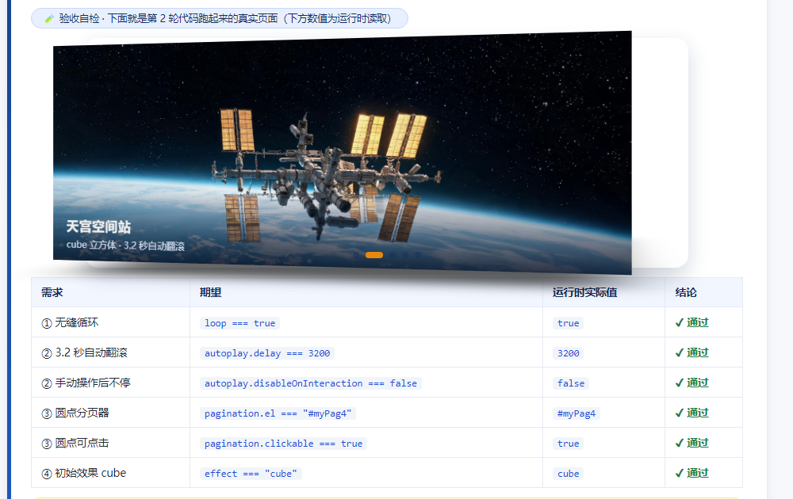

提示词与 AI 对话记录 · 大国重器光影展
任务一：两轮提示词迭代（含每轮 AI 回答、逐项验证与结论）；任务二：creative 电影墙的 AI 请教记录与 prev / next 解释；任务三：第六件展品与 parallax 新能力的对话摘录。文末附答辩四连问的自答。
任务一 · 第 1 轮提示词先按直觉问一次，看看 AI 会给什么
mySw4：无缝循环、3.2 秒自动播放、有圆点分页器、初始效果是立方体 cube，给我完整代码。var mySw4 = new Swiper('#mySw4', {
loop: true,
autoplay: { delay: 3200 },
pagination: { el: '#myPag4' },
effect: 'cube',
cubeEffect: { shadow: true, slideShadows: true }
});
// HTML 里放 <div class="swiper-pagination" id="myPag4"></div> 即可
这版能满足循环、自动播放、立方体效果，圆点分页器也已经加上。
粘进页面跑了一遍，逐项对照需求的实测结果如下（数值取自页面里 mySw4.params 的真实运行值）：
| 需求 | 期望 | 第 1 轮实测 | 结论 |
|---|---|---|---|
| ① 无缝循环 | loop === true | true | ✔ 通过 |
| ② 3.2 秒自动翻滚 | autoplay.delay === 3200 | 3200 | ✔ 通过 |
| ② 手动操作后不停 | autoplay.disableOnInteraction === false | true（默认值） | ✘ 不通过 |
| ③ 圆点分页器 | pagination.el === '#myPag4' | #myPag4 | ✔ 通过 |
| ③ 圆点可点击 | pagination.clickable === true | false（默认值） | ✘ 不通过 |
| ④ 初始效果 cube | effect === 'cube' | cube | ✔ 通过 |
clickable:false、disableOnInteraction:true。任务一 · 第 2 轮提示词把需求翻译成参数名，逐条点名
① 圆点分页器必须可点击跳转，请显式写
pagination.clickable: true；② 用户手动拖动后自动播放不能停，请显式写
autoplay.disableOnInteraction: false；③ 其余需求也请逐条对应成参数，不许省略：
loop: true、autoplay.delay: 3200、pagination.el: '#myPag4'、effect: 'cube' 加 cubeEffect、切换动画 speed: 800；④ 每个参数后面用注释说明它控制什么，方便我答辩。
var mySw4 = new Swiper('#mySw4', {
loop: true, // ① 无缝循环：最后一张往后翻回到第一张
autoplay: {
delay: 3200, // ② 每张停留 3.2 秒（停留时长，不是动画时长）
disableOnInteraction: false // ② 手动拖动后自动播放继续
},
pagination: {
el: '#myPag4', // ③ 圆点挂在哪个容器上
clickable: true // ③ 圆点可点击跳转
},
effect: 'cube', // ④ 初始效果：3D 立方体
cubeEffect: {
shadow: true, // ④ 立方体投影
slideShadows: true // ④ 每张幻灯自己的阴影
},
speed: 800 // 切换动画 800 毫秒
});
// HTML：<div class="swiper-pagination" id="myPag4"></div>
这一版把 4 项需求都显式写成了参数，默认值不再参与决策。

天宫空间站
cube 立方体 · 3.2 秒自动翻滚

复兴号动车组
拖动一下，自动播放不会停

C919 大飞机
点圆点可以跳到任意一张

奋斗者号
最后一张再往后翻会回到第一张
| 需求 | 期望 | 运行时实际值 | 结论 |
|---|
clickable:true、disableOnInteraction:false 之后，AI 没有再走默认值。任务一 · 答辩追问自答三个必答题，先写成文字再上机
Q1：第一版提示词漏掉了哪个需求？
漏掉的是"可交互"的两个限定：只说了"有圆点分页器"，没说圆点要能点击跳转；只说了"自动播放"，没说手动拖动后不能停。Swiper 的默认值是 pagination.clickable = false、autoplay.disableOnInteraction = true，所以不写就必然不达标。
Q2：第二轮是怎么"说清楚"的？
做了三件事：① 把需求翻译成参数名与取值（clickable: true、disableOnInteraction: false）；② 点名"上一版哪两处不满足"，限定修改范围；③ 要求逐条对应 + 每行注释，不许用默认值概括。
Q3：AI 第一次给的代码错在哪？
不是语法错误，是"能跑但不满足需求"：pagination 缺少 clickable，圆点变成只能看不能点；autoplay 缺少 disableOnInteraction: false，用户一拖自动播放就停。验证方式是打开控制台读 mySw4.params，而不是"看起来能翻页"就算过。
任务二 · creative 仿写用官方示例 + AI 自学课堂没讲的第 7 种效果
官方示例地址：swiperjs.com/demos/257-effect-creative.html。示例只给了 sy 一行 transform，看不出 prev / next 到底谁管谁，所以我把问题拆成两次问。
creativeEffect.prev 和 .next 分别作用在"哪一张幻灯片"上？我要做"电影选片墙"：上一张缩小左移并带一点角度，下一张放大右移进场，给我完整配置。translate、rotate、scale、opacity、shadow。
effect: 'creative', slidesPerView: 1.8, // 一屏露 1.8 张，两侧才有位置露脸 centeredSlides: true, // 当前张居中 creativeEffect: { limitProgress: 2, prev: { // 上一张：缩小 + 左移 + 带角度 shadow: true, translate: ['-55%', 0, -380], // 左移 55%，Z 轴后退 380px（后退显小） rotate: [0, 0, -9], // 绕 Z 轴逆时针斜靠 9 度 opacity: 0.85 }, next: { // 下一张：右移 + 放大等待进场 shadow: true, translate: ['55%', 0, 120], // 右移 55%，Z 轴向前 120px（显大） scale: 1.12 // 再放大一点，进场时收回 } }
'55%'、'-55%' 是相对谁的百分比？我想让卡片倾斜到 20 度该怎么改？translate:['-55%',0,-380] 里的 -55% = 往左挪自身宽度的 55%；第二个数是 Y 轴；第三个是 Z 轴像素值，负得越多越远越小。要转 20 度，把
rotate 的第三个值改成 20：rotate: [0, 0, 20]（正数顺时针，负数逆时针）。destroy 再 new Swiper）。关键在 slidesPerView: 1.8：不让一张铺满整屏，左右两张才有位置露出来，静止时就能看到"左小右大"的选片墙。任务三 · 综合创作 + 技术答辩第六件展品 + 一个课堂没讲过的能力
① 第六件展品：爱达·魔都号
提示词：网页轮播展品配图：首艘国产大型邮轮"爱达·魔都号"，白色船体、多层甲板，停靠在现代化港口，晴空白云、蓝色海水，写实摄影，横向 16:9 构图，画面干净无文字
生成结果 2560×1440（16:9），保存为 swiper-imgs/aida_1.jpg；四个演示台都补了完整的 .swiper-slide 结构（img + .wy-cap），现在每组都是 6 件展品。
① 初始化里加
parallax: true；② 给要漂移的元素加
data-swiper-parallax="-150"，数值绝对值越大移动越远。data-swiper-parallax="-150"、副标题 -320，拖动时副标题跑得更快，形成前后景速度差；注意 parallax: true 必须写在每次重建的配置里，否则销毁重建后视差会失效。
答辩四连问 · 自答下节课现场抽查
1. 这段代码什么意思？
演示四用 wyInit4(effectName) 统一装配：公共参数（loop / speed 800 / autoplay 3200 / pagination / parallax）写一份，再按 effectName 补对应的专属参数（cubeEffect、creativeEffect 等），最后 destroy 旧实例再 new Swiper。按钮点击只做两件事：切高亮、把 data-fx 交给 wyInit4。
2. AI 第一次给的哪里不对？你改了什么？
三处：① pagination 漏 clickable、autoplay 漏 disableOnInteraction（任务一第 1 轮）；② creative 配置第一次只写了 translate，没写 scale / rotate，"电影墙"缺角度和大小差；③ parallax 第一次只加了 data-swiper-parallax，漏了配置里的 parallax: true，属性完全不生效。
3. 新参数的作用？
parallax：开启视差模块；data-swiper-parallax：该元素在一次切换中横向位移的比例，绝对值越大动得越多（负值反向）。creativeEffect.prev / next：分别定义"上一张"和"下一张"的静止位置与形态（translate 百分比相对幻灯片自身尺寸，第三个数值是 Z 轴像素）。
4. 现场把 delay 改成指定值，并解释预期变化
例如把演示三的 autoplay.delay: 2600 改成 1000：每张只停 1 秒，翻滚明显变快；改成 5000 则每张停 5 秒，节奏变慢。delay 是"停留时长"，speed 才是"动画时长"，两者不要混。改完刷新页面即可，不必销毁实例。